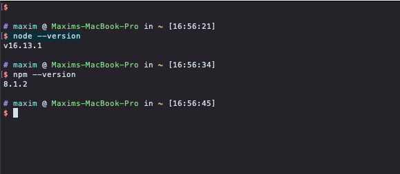
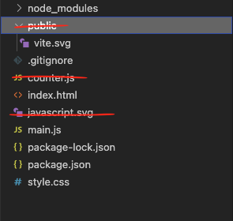

Start by launching your Terminal (PowerShell on Windows.) Once it's running type in the command:
node --version
If you see a version number and it's higher than 14.0.0 - you'll be fine. If you get a response that amounts to "I don't know what you want from me!" you'll need to install NodeJS from their website: nodejs.org. Grab the version recommended for the most users and proceed with the installation. Once it's finished it might not be a bad idea to restart your machine - just to make sure all the paths are updated. After that try launching Terminal (PowerShell on Windows) and running the command again.
node --version
You should see the version number now. Also run this command:
npm --version
You should see a number higher than 6.0.0 If you don't - consult this guide for details "Downloading and installing Node.js and npm"
If you think of a browser as a car NodeJS is the engine from that car, that has been extracted and packaged and can be installed in your garage (on your computer) to provide power to your tools. NPM is Node Package Manager, and it will help us manage and install new components for that engine. You ternimal (or PowerShell on Windows) should look something like this now:
We'll need to create a simple Node-based Web application and run it in a local server to make sure that the requests to OpenAI API come from an HTTP host and not just a file in your filesystem. There are many ways of doing this - one of the simpler ones is to create an app with Vite, a scaffolding engine.
Before we create our app let's figure out where will we be building it. To find your current working directory run
pwd
command in your Terminal (or PowerShell on Windows.) This will print out the path. From there you can navigate to the directory where you'd like to build your app. For example, I prefer to keep my coding projects in the "Repositories" directory inside my user folder so to move there from my current personal user folder I will run a cd (change directory) command like this:
cd Repositories
Once there I will run a simple command to create a Vite-based web-app:
npm create vite@latest
and follow the prompts. I will name my project "openAIapiProject" and we'll be using vanilla JavaScript for this project. So my terminal will look like this:
Once you've created your web-app Vite will prompt you with 3 next steps: change to the newly created app directory (its name is the same as the name you gave your Vite project), install the packages necessary to run your app and then run it in a developer mode. After completing the first 2 steps your Terminal (or PowerShell) would look similar to this:
Now you should be ready to run your app. Run the third command (npm run dev) and your NodeJS server should start. If you press "h" for help you should be able to see this:

You can press 'o' to open the default page in your browser. Vite server will track any chages you make to your web-app and will restart this browser page the moment you save your changes to your file, which is neat. So check back here as you progress with your work.
Open the directory that Vite has created for your web-app in your code editor and you'll see that there are a lot of things there that we won't need. You can start deleting them
You can also remove evrything from "style.css" and leave only one line in main.js, the first one:
import './style.css'
In your CSS file (style.css) select and delete all the content and add this line
html, body { margin: 0; }
They will simply make sure that the content of your page is flush with your browser window.
Save all your changes and check back with your browser - you should see a blank page instead of the default page you saw before. You can check on the resulting file structure here. The last thing we need to do in your Terminal is to instal Three.JS library for NodeJS. In your Terminal press 'q' to quit your Vite server and run
npm install three
Once the installation has finished you can run
npm run dev
again to restart the Vite server.
Next we'll need to import the Three.JS module into our main.js file, we can do that right after the CSS import
import './style.css'
import * as THREE from 'three'
With that we'll have access to all the components of the standard ThreeJS library. There are some additinal component that we will need to import, but they are already installed in out app folder (in the node_modules section).
With this we can implement the most basic scene in ThreeJS. We'll start by steeting up a data object for our window sizes - not strictly necessary, but it will come handy later. Then we'll create a scene and a camera and position the camera a bit up and a bit closer to us. Lastly we'll need to create a renderer that will render the graphics for us and append it to the HTML document.
//scene size
const sizes = {
width: window.innerWidth,
height: window.innerHeight
}
//scene
const scene = new THREE.Scene()
const camera = new THREE.PerspectiveCamera( 75, sizes.width / sizes.height, 0.1, 1000 )
camera.position.z = 5
camera.position.y = 2
//renderer
const renderer = new THREE.WebGLRenderer()
renderer.setSize( sizes.width, sizes.height )
document.body.appendChild( renderer.domElement )
After this we can add some contents to our scene and render it. We'll add a cube - this will require a box geometry and we'll start wil a Basic material, although we'll switch to Standard material very soon. The geometry and the material will allow us to create a mesh which we'll add to our scene. The last step here will be to render our scene as seen through our camera.
//scene contents
const cubeGeometry = new THREE.BoxGeometry( 1, 1, 1 )
const cubeMaterial = new THREE.MeshBasicMaterial( { color: 0x48727f } )
const cube = new THREE.Mesh( cubeGeometry, cubeMaterial )
cube.position.y = 1
scene.add( cube )
renderer.render( scene, camera )
Let's add animation to our scene. We'll use a standard JavaScript animation technique which involves creating a function that will instruduce changes to our scene and then call itself again, thus repeating those changes. Just make sure to re-render the scene each time, so those increamental changes are visible. You can repace the renderer.render call with the following:
//animation
function draw() {
requestAnimationFrame( draw )
cube.rotation.x += 0.01
cube.rotation.y += 0.01
renderer.render( scene, camera )
}
draw()
Let's also add a bit of housekeeping. Right now if you resize your window the scene will remain whichever size it had when the window loaded. We can make it change the size to follow the size of the browser window. To do that we'll use the sizes data object we created earlier, and call updates on it every time the window is resized. This code can go at the end of your main.js file:
window.addEventListener('resize', ()=>{
console.debug("resize")
// Update sizes
sizes.width = window.innerWidth
sizes.height = window.innerHeight
// Update camera aspect ratio
camera.aspect = sizes.width / sizes.height
camera.updateProjectionMatrix()
// Update the renderer
renderer.setSize(sizes.width, sizes.height)
renderer.setPixelRatio(Math.min(window.devicePixelRatio, 2))
})